Research Hub/The season on YouTube so far: 106 days/Serie A
YouTube Football Tracker · Serie A 2026/27
How the 20 clubs and the league channel publish, who gets watched and who goes quiet, then the season's biggest videos and what they have in common, read chart by chart.
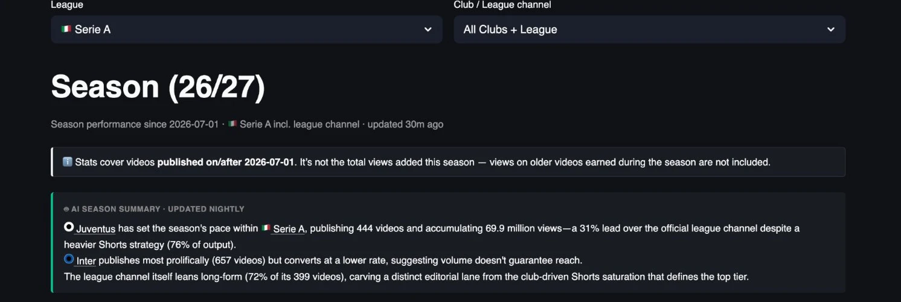
Juventus has set the pace on YouTube in Serie A this season, with 103.5 million views from 600 videos, a 31% lead over the official league channel at 78.8 million, and it got there on Shorts, which make up 450 of those 600 uploads, three quarters of everything the club has published since July.
Inter publishes more than anybody, 858 videos in three and a half months, and turns that volume into a lower return per upload, 69.1 thousand views per video against 172.5 thousand for Juventus, so publishing more on its own does not buy reach. The league channel has gone its own way, with 402 of its 552 videos in long-form, and it holds a distinct editorial lane next to the club channels, which are mostly racing each other in the Shorts feed.
This is the summary the tracker writes for itself every night, and part one of this piece takes the dashboard apart one chart at a time, to show what sits under those three sentences, and part two looks at the biggest individual videos of the season.
Scope: videos published on or after 1 July 2026 on the 20 Serie A club channels plus the official league channel, 4,334 videos over 106 days, snapshot of 15 October 2026. Views on older videos earned during the season are not counted.
YouTube Football Tracker
The YouTube Football Tracker follows more than 100 club and league channels across the top five European leagues, plus the road to the World Cup 2026, with daily recaps, season trends and all-time leaderboards, updated every night. If you run YouTube for a club or a league, it is the quickest way to see what your rivals publish, when and in which format, and which of their videos actually travel, so you can learn from them before you plan your own. If you are a sports journalist, it shows you which stories, clubs and formats work on YouTube this week, with the numbers to back the piece. Open the tracker and start with your own league, and if you want a deeper read for your club or your newsroom, message me on LinkedIn.
Explore the YouTube Football TrackerYou can find me on LinkedIn, read my LinkedIn newsletter or find me on Substack.
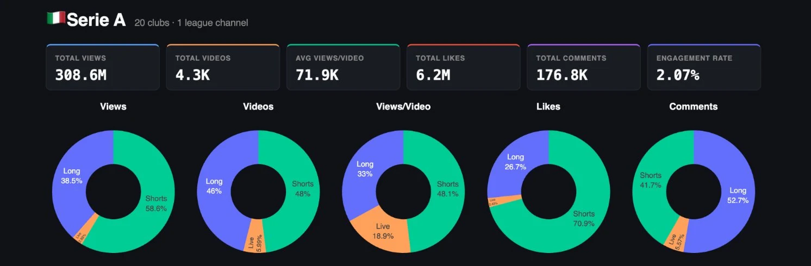
Since 1 July the 21 channels have published about 4,300 videos and collected 308.6 million views, 6.2 million likes and 176.8 thousand comments, which works out at 71.9 thousand views per video and an engagement rate of 2.07%.
The donuts are where the season starts to make sense, because Shorts are 48% of what clubs publish and they bring in 58.6% of the views and 70.9% of the likes, and long-form, at 46% of output, still carries 52.7% of the comments. People tap a heart on a Short and they write something under a long video, so the two formats are doing different jobs for the same club. Live is around 6% of uploads and a sliver of total views, but in the views-per-video donut it takes 18.9%, so when a club does go live, people turn up.
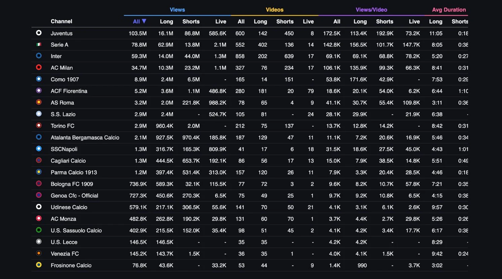
Juventus sits on top with 103.5 million views from 600 videos, and 86.8 million of those views come from 450 Shorts, so three quarters of the output and most of the audience run through the vertical feed. The official Serie A channel is second with 78.8 million, built the other way round, with 62.9 million coming from long-form, and Inter is third with 59.3 million from 858 videos, more than anyone else has published.
After AC Milan, at 34.7 million, the table drops to Como 1907 in fifth with 8.9 million, a quarter of what Milan has. Como is also the line I would look at twice, because its 14 long-form videos average 171.6 thousand views each, the best long-form average in the league. At the other end Frosinone has 76.8 thousand views from 53 videos, Lazio has not published a single Short in this window, and Napoli has put out 41 videos in three and a half months.
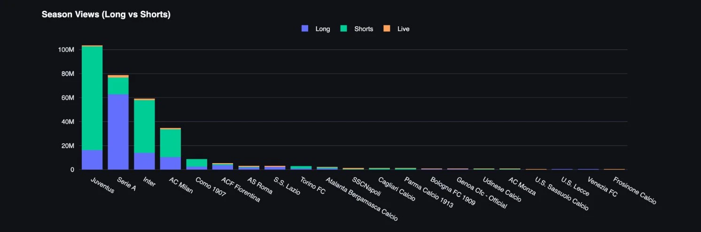
Four channels are above 30 million and everybody else is below 10 million. Juventus, the league channel, Inter and Milan add up to about 276 million views, close to 90% of the 308.6 million total, and the remaining 17 clubs share what is left.
Juventus takes 86.8 million of its 103.5 million views from Shorts, 84% of the total, and its Shorts also win on a per-video basis, averaging 192.9 thousand views against 113.4 thousand for its long-form, so for Juventus the vertical feed is the reach engine and the long-form library is the smaller business.
Inter gets 74% of its views from Shorts, with 639 of its 858 videos in that format, and its two formats average almost exactly the same, 69.1 thousand for long-form and 68.8 thousand for Shorts. Inter buys reach with volume across both formats, and neither one is pulling ahead.
Milan is the most interesting of the four. Shorts bring 67% of its views, 23.2 million from 234 videos, and its 76 long-form videos average 135.9 thousand views each, more than its own Shorts at 99.3 thousand and more than Juventus long-form. If I ran the Milan channel I would be making more long-form, because the audience is already there for it.
The league channel is the mirror image of the clubs, with 62.9 million of its 78.8 million views, 80%, coming from 402 long-form videos that average 156.5 thousand, the best long-form average among the top four, and its Shorts at 101.7 thousand. That is the separate lane the nightly summary points at, with the league owning long-form and the clubs fighting it out in Shorts.
Como, in fifth, takes the Milan lesson to the extreme, with 14 long-form videos averaging 171.6 thousand views and 151 Shorts averaging 42.9 thousand. Fiorentina in sixth runs the reverse of the top four, with 3.6 million of its 5.2 million views from long-form and only 20 Shorts among its 280 videos, and it publishes more long-form than Juventus or Milan, 181 videos, for an average of 20.1 thousand views each, so the biggest long-form publisher among the clubs earns a fraction per video of what Como gets from 14.
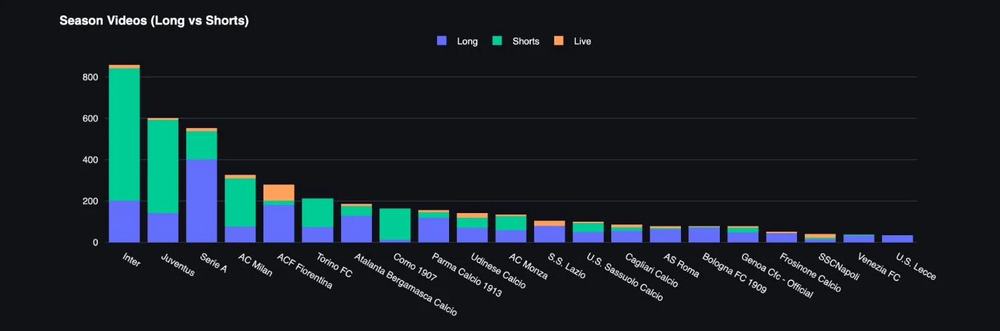
Inter leads on volume with 858 videos, 639 of them Shorts, ahead of Juventus at 600, the league channel at 552 and Milan at 327, and below that the link between how much a club publishes and how much it gets watched is weak. Torino has published 212 videos and Lazio 105, and both sit at 2.9 million views, so Lazio gets twice as much out of each upload, and Fiorentina has run 79 live streams, more than any other club, for an average of 6.2 thousand views each.
Lecce, at 35 videos, and Venezia, at 36, are the least active channels, which means roughly one video every three days across the season so far. You cannot build an audience on YouTube at that rhythm, however good each video is.
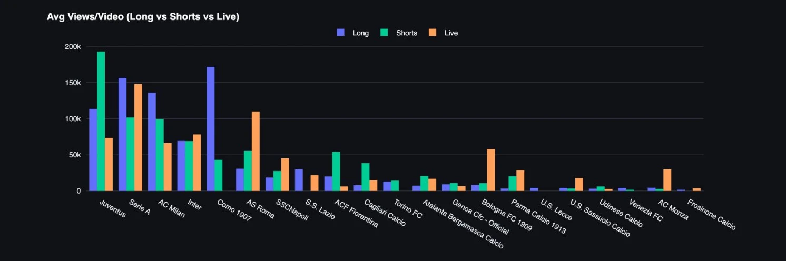
Views per video puts the volume race in context. Juventus averages 172.5 thousand views per video and Inter 69.1 thousand, so Inter publishes 43% more and gets well under half the views per upload, with its Shorts averaging 68.8 thousand against 192.9 thousand for Juventus Shorts.
The split by format tells each club where its audience is. Como's long-form averages 171.6 thousand views, four times its own Shorts at 42.9 thousand, from just 14 videos, so Como has an audience waiting for long-form and spends most of its output on the format that earns least. Roma has the same story with live, nine streams averaging 109.8 thousand, more than three times the 30.7 thousand of a Roma long-form video. In both cases the club has found the format that works and makes very little of it, which is the cheapest growth available anywhere in this dashboard.
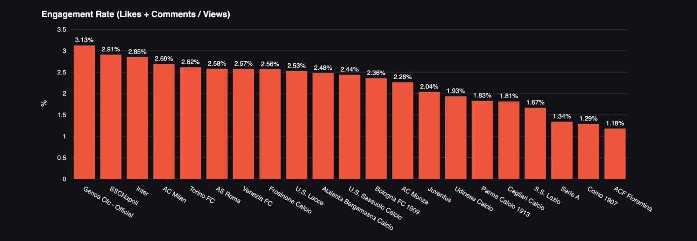
The ranking turns over. Genoa leads at 3.13%, then Napoli at 2.91%, Inter at 2.85% and Milan at 2.69%, and Juventus, the views leader, is at 2.04%. Juventus has the lowest rate of the big four and the highest share of Shorts views among them, 84%, while Inter sits at 2.85% with a similar Shorts share, so the format alone does not explain it, and my reading is that Juventus's global audience watches as neutrals and reacts like neutrals. The league channel at 1.34% is what I would expect from a channel nobody supports. Napoli at 2.91% from only 41 videos says the fans are there and react when the club posts, which makes its silence in the last chapter harder to explain. Como and Fiorentina are last at 1.29% and 1.18%.
Reach and engagement point in different directions in Serie A, and the smaller channels with a committed fan base turn a bigger share of their viewers into people who react. I support Torino, so I will take some comfort from 2.62% and fifth place here, even if 2.9 million views puts the club eighth among the clubs.
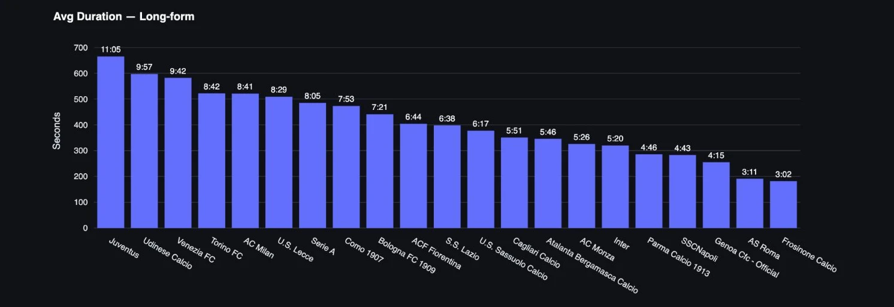
Juventus makes the longest long-form videos in the league, at 11:05 on average, followed by Udinese at 9:57, Venezia at 9:42, Torino at 8:42 and Milan at 8:41. At the bottom Frosinone averages 3:02 and Roma 3:11 which is clip length published in the long-form slot.
Read this next to the length of Shorts and the Juventus approach becomes clear, because the club that makes the longest long-form videos also makes some of the shortest Shorts.
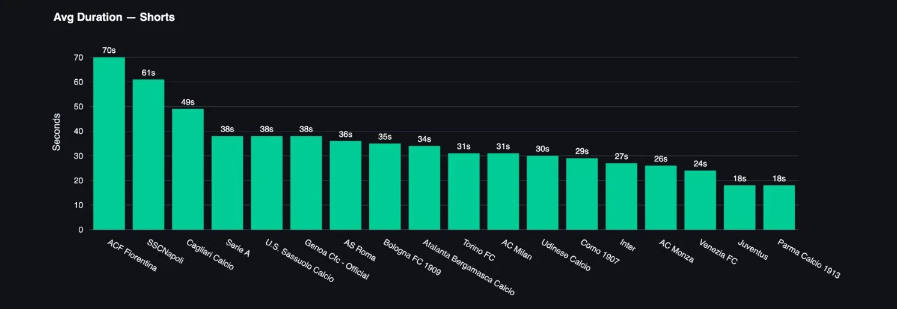
Fiorentina's Shorts average 70 seconds, Napoli's 61 and Cagliari's 49, and then most of the league sits between 25 and 38 seconds. Juventus and Parma are at the bottom with 18 seconds each.
Juventus runs a barbell, with eleven-minute long-form and eighteen-second Shorts, and that barbell has produced the biggest channel in the league this season. Fiorentina is doing the opposite, with long Shorts and the lowest engagement rate, which is a pairing I would want to test before I kept going.
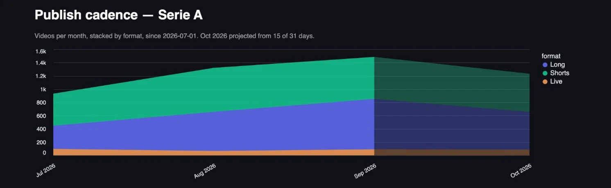
Output grew from roughly 900 videos in July to about 1,500 in September, and both long-form and Shorts grew with it, so the extra volume came from clubs publishing more of everything once the season started. October is projected a little lower than September, and the projection is built on 15 of 31 days, so treat it as an early read.
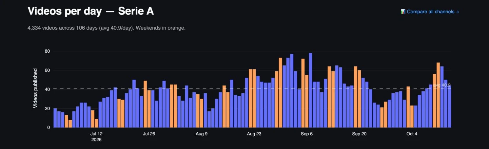
Early July runs at 15 to 25 videos a day, which is pre-season, tours and kit launches, and the daily count climbs through August to the busiest stretch at the end of the month and the first week of September, with several days near 80.
Weekends are not automatically the busiest days, and plenty of weekdays outpublish the weekend around them, because signings, press conferences and match content land on different days. For a club the useful number is the average, 40.9 Serie A videos a day, which is how much other Serie A content every upload competes with for the attention of the same fans.
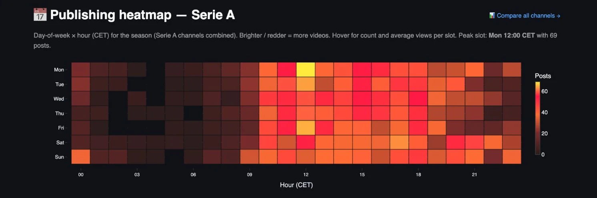
The peak slot is Monday at 12:00 CET, with 69 posts, and the working day from 09:00 to 22:00 is where almost everything happens. The night is close to empty, with one exception, the first hour of Sunday morning, which is the post-match window after the Saturday evening kick-off.
Monday lunchtime as the busiest hour of the week says a lot about how clubs see YouTube, as the place for the weekend recap. That is also the hour everyone else is publishing, so a club with a smaller audience could try the quieter slots and see whether it gets more of the feed.
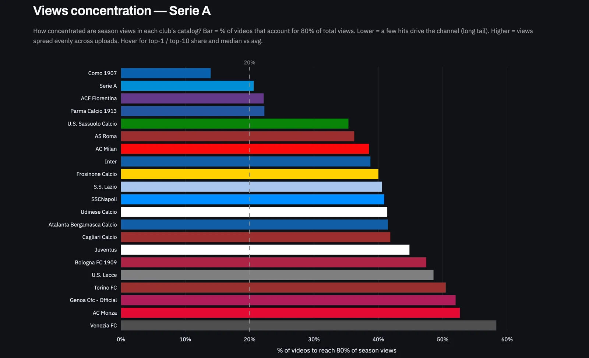
Como needs only about 14% of its videos to reach 80% of its season views, the most concentrated catalogue in Serie A, and the league channel, Fiorentina and Parma sit around the 20% Pareto line, so for those four a short list of hits carries the channel and the rest of the catalogue is there to keep it alive and the algorithm fed. From Sassuolo at about 35% the picture changes, and Milan, Inter, Lazio, Napoli, Udinese, Atalanta and Cagliari all sit between 36% and 42%, with Juventus at about 45%, so the biggest channels spread their views across almost half the catalogue, which is what a daily rhythm of videos that each find an audience looks like.
The long bars at the bottom belong to Bologna, Lecce, Torino, Genoa, Monza and Venezia, between 47% and 58%, and that spread is less a sign of an even audience than of a channel with no hit at all, where every video earns about the same small number. A club in that group gets the quickest gain from one video that travels, and the next chart says how rare those are in Italy.
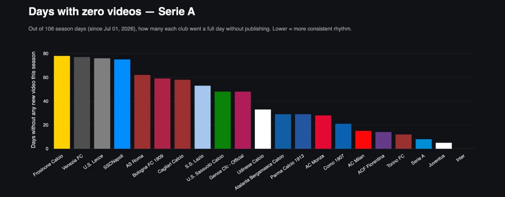
Inter has not missed a single day, Juventus has missed about five and the league channel about eight, with Torino, Fiorentina and Milan all between 12 and 15. At the other end Frosinone, Venezia, Lecce and Napoli each went more than 70 days of the 106 without publishing, which means they are silent on most days of the season.
Napoli in that group is the surprise of the whole dashboard, a big club with a big fan base sitting next to the smallest channels in the league for consistency. Consistency is the cheapest thing on this page to fix, and the four channels with the fewest missed days are the four at the top of the views chart.
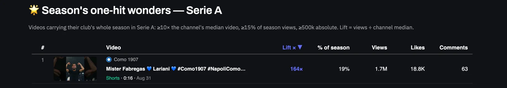
Serie A has exactly one video this season that meets the tracker's one-hit test, the sixteen-second Como Short of Cesc Fabregas and Lariani from 31 August, which has 1.7 million views, 164 times the channel's median video and 19% of everything Como has collected since July. Nothing from the other 19 clubs or the league channel qualifies, which is consistent with the chart above, where almost every Italian channel spreads its views evenly across its uploads.
That is good news for the rhythm of the big channels and bad news for anyone looking for a shortcut, because the Premier League and La Liga pages each list ten of these videos and Serie A lists one. The Como clip is the proof that a smaller club can produce one, and it came from a coach and a player being themselves for a phone, with no match footage in it.
Part two
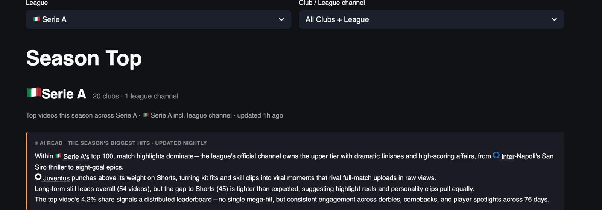
Part one looked at channels, and part two looks at videos, the 100 most-watched Serie A uploads since 1 July, which add up to 94.9 million views, 948.8 thousand per video on average, at an average age of 40 days. Match highlights own the top of the list and almost all of them come from the league channel, starting with the second half of Inter-Napoli at San Siro, the most-watched video of the season with 3.3 million views, and running through Napoli-Como, Roma-Inter, Lazio-Milan and Juventus-Milan.
Juventus is the only club that competes with the league in this list, and it does it with Shorts, juggling, skills and kit, which pull the same raw views as full match highlights. Long-form leads the top 100 by only a few points, 52% to 47%, so highlight reels and player clips share the top of the season almost evenly, and the most-watched video holds just 3.4% of the top 100 views, so the season has no single viral monster and the list is built from a long run of big matches, comebacks and player moments.
For a club social team this is the list to learn from, and for a journalist it is the closest thing to a record of what Serie A fans chose to watch, like and argue about this autumn.
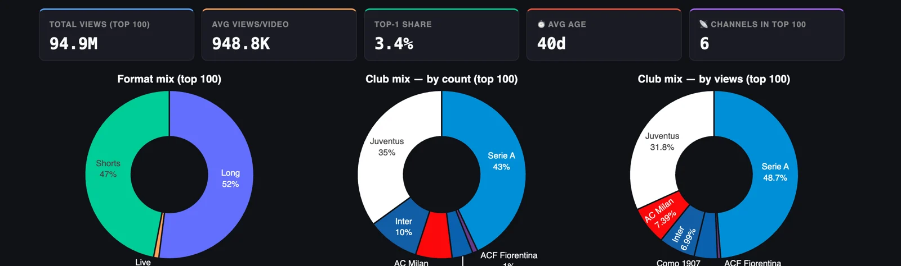
Only six channels place a video in the top 100, and two of them take almost all of it. The league channel has 43% of the videos and 48.7% of the views, Juventus has 35% of the videos and 31.8% of the views, and Milan, Inter, Como and Fiorentina share the rest, with Milan taking 7.4% of the views and Inter 6.6% from its ten entries.
Fifteen clubs have no video in the top 100, and Napoli, which plays in two of the three most-watched videos of the season, is one of them, because both of those videos sit on the league channel. Napoli matches are some of the biggest content in Serie A this season and the club channel is not where people go to watch them, which ties straight back to the 70-plus days without a post in part one.
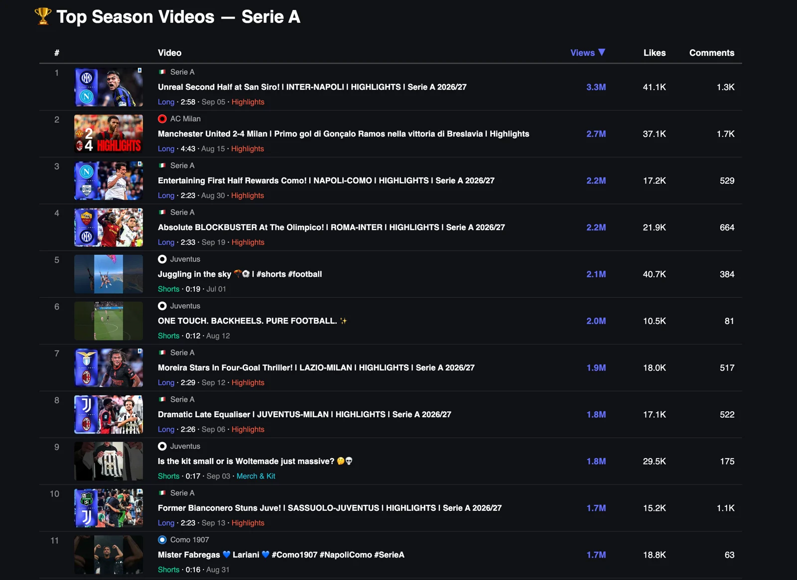
Seven of the top eleven are match highlights, between 2:23 and 4:43 long, with titles that sell the drama before the score, an unreal second half, a blockbuster at the Olimpico, a four-goal thriller, a late equaliser. The league also splits its biggest matches into halves, with a first-half video for Napoli-Como and a second-half video for Inter-Napoli, which doubles the inventory from a single fixture and gives the algorithm two chances at the same game.
The three Juventus entries are all Shorts under 20 seconds and none of them is about a match, with a juggling clip from 1 July at 2.1 million views, a twelve-second backheel montage at 2.0 million and a kit video built on how big Woltemade looks in the new shirt at 1.8 million. The juggling clip went out on the first day of the season window and is still fifth, so a good Short keeps travelling for months.
Milan's entry is the 4-2 win over Manchester United in Wroclaw on 15 August, 2.7 million views for a match played before the season had started, which says how much a famous opponent is worth in a month with no league football, and Como closes the top eleven with a sixteen-second Short of Cesc Fabregas at 1.7 million, a different shape from part one, where Como's strength was the average of its long-form.
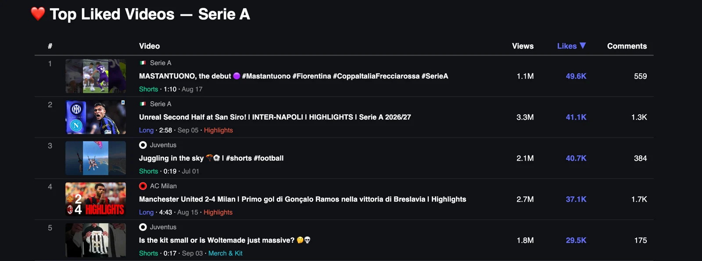
The most-liked video of the season is a league channel Short of Mastantuono's debut for Fiorentina in the Coppa Italia, with 49.6 thousand likes from 1.1 million views, a like rate of 4.5%, more than three times the 1.25% of the Inter-Napoli highlights in second place. Juventus places two Shorts in the top five, the juggling clip at 1.9% and the kit video at 1.6%, and the Milan friendly sits at 1.4%.
Likes go to faces and first moments, a debut, a skill, a player in a new shirt, and none of those videos needs match footage or a rights window, so they can go out the same day they are shot.
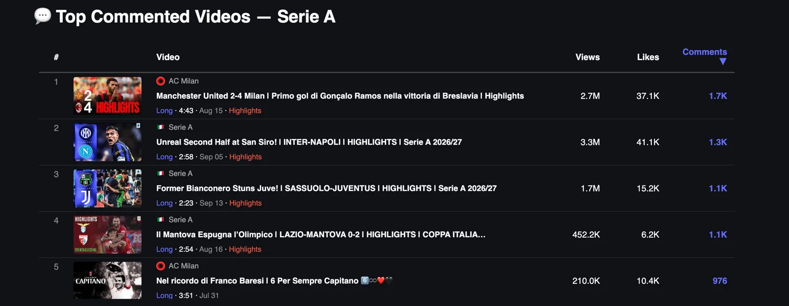
The Milan win over Manchester United leads with 1.7 thousand comments, followed by the Inter-Napoli and Sassuolo-Juventus highlights, and the two entries that tell you most are at the bottom of the list. Lazio's 0-2 home defeat to Mantova in the Coppa Italia drew 1.1 thousand comments from 452 thousand views, one for every 411 views, and Milan's tribute to Franco Baresi, captain forever with the number 6, drew 976 comments from 210 thousand views, one for every 215 views, more than seven times the rate of the Manchester United friendly.
A humiliation at home and a tribute to a legend produce more conversation per view than any highlight on this list, and for a journalist this is the most useful list in the tracker, because it points straight at the stories fans want to talk about.
Serie A on YouTube is four big channels and seventeen small ones, and the gap between them is mostly about rhythm and format, because the clubs that publish every day and lean on Shorts own the reach, and the clubs that go quiet for weeks at a time are invisible on the platform, whatever the size of their stadium.
Engagement is the one place where the smaller clubs win, and that is the asset I would build on if I ran one of them, with a daily rhythm first, a clear idea of what goes in long-form and what goes in Shorts second, and the Monday lunchtime rush avoided on purpose. Nobody at the bottom of the zero-days chart needs a bigger budget to fix the first of those.
The hit list in part two says what that daily rhythm should carry, with the league owning match highlights and the clubs winning with debuts, skills, kit, tributes and the nights fans want to argue about, and most of those need no match footage at all.
YouTube Football Tracker
Clubs and leagues can use it to benchmark their channel against every rival and borrow what is working elsewhere, across all five big leagues. Journalists can use it to find what is breaking out on football YouTube, which club is suddenly growing and which format is taking over, with the numbers to back the story. Everything in this piece is live at ytft.aguywithascarf.com, and if you want a custom view for the clubs or leagues you follow, message me on LinkedIn.
Explore the YouTube Football TrackerYou can find me on LinkedIn, read my LinkedIn newsletter or find me on Substack.